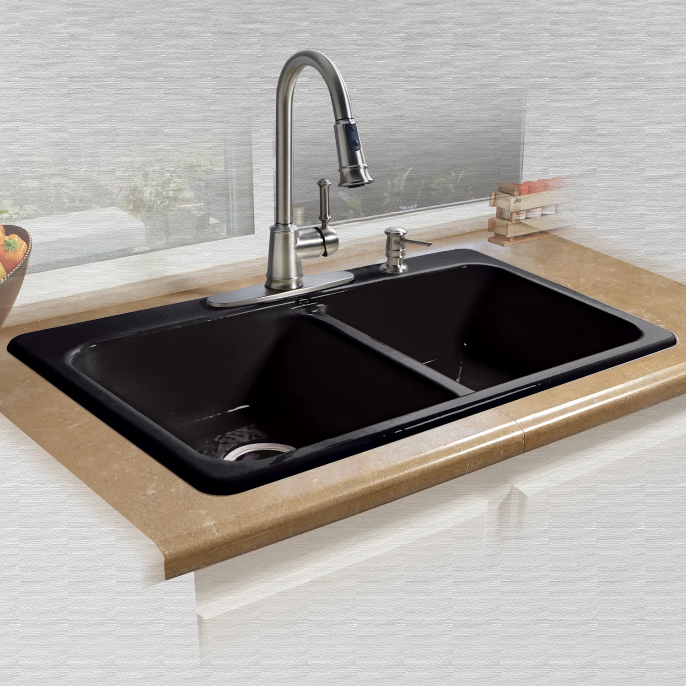
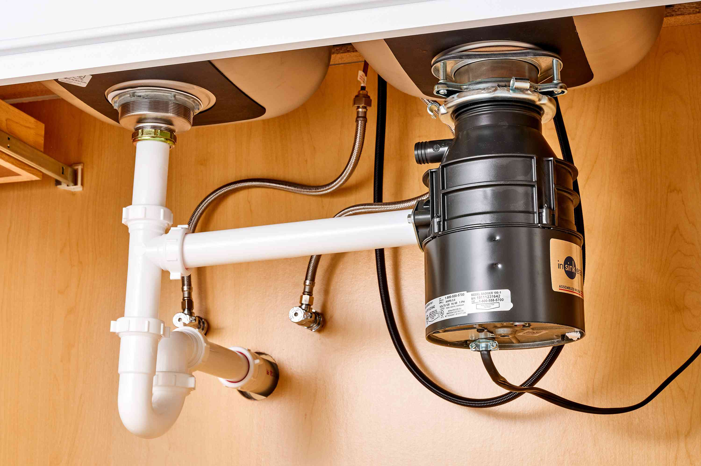
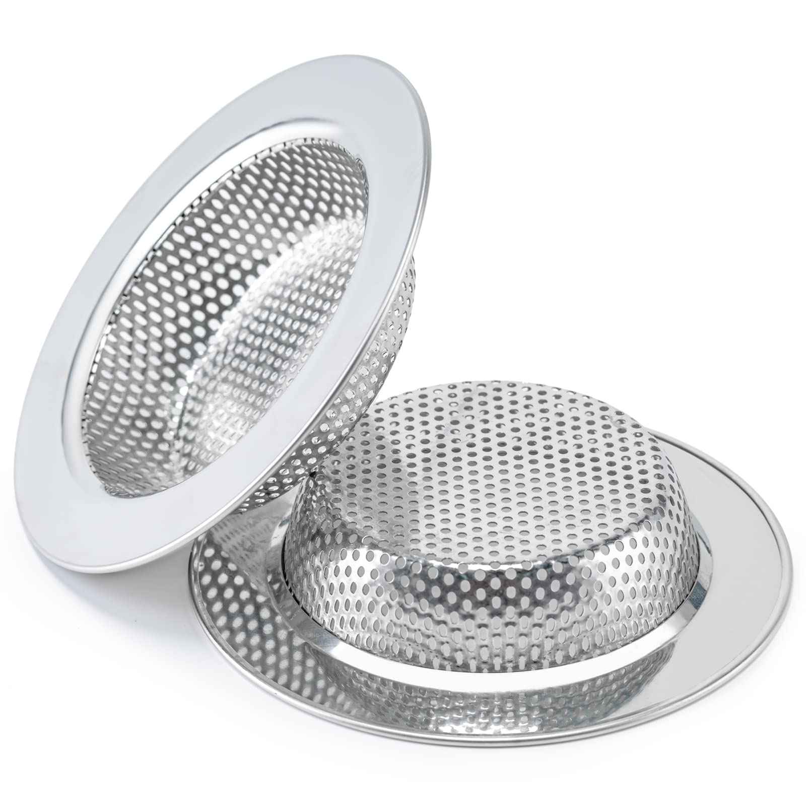

-

Material Notes: Rinse and wipe after every use to avoid stains and bacteria.
- Main bowl where dishes and food are washed.
- Holds water when the drain is closed.
- Can be single or double bowl depending on kitchen space.
- Made from stainless steel, ceramic, or granite.
- Deep design prevents water from spilling.
-

Material Notes: Wipe to avoid water spots and mineral buildup.
- Supplies water for washing dishes and food.
- Can have hot and cold water control.
- Some faucets have a pull-out sprayer for easier cleaning.
- Common materials: stainless steel or chrome.
-

Material Notes: Do not push food or grease into the drain.
- Opening at the bottom of the sink where water exits.
- Connected to plumbing pipes below.
- Must stay clear to prevent clogging.
-

Material Notes: Clean every day to avoid bad smell.
- Metal cup that covers the drain hole.
- Catches leftover food to prevent clogging.
- Can be lifted to throw scraps into trash.
-

Material Notes: Wipe spills immediately.
- Surrounds the sink to prevent water from falling into cabinets.
- Helps support the sink structure.
- Must be kept dry to avoid mold or damage.
-

Material Notes: Clean rack weekly to avoid mold.
- Used to dry dishes after washing.
- Placed beside or over the sink basin.
- Allows water to drip back into the sink.
-

Material Notes: Keep chemicals away from children.
- Located below the sink for storage.
- Holds cleaning supplies like soap and brushes.
- Includes pipes for water and drainage.